Computer Hardware & Software
What's the difference between Hardware and Software?
- Hardware refers to the physical components of a computer that can be touched. It includes the essential electronic devices that form a computer system, such as memory devices, monitors, printers, keyboards, mice, and the Central Processing Unit (CPU).
- Software consists of instructions, procedures, and documentation created to execute tasks on a computer system. It includes programming code that operates on a computer processor, which can be either machine-level code or code designed for an operating system. Examples of software include MS Word, Excel, PowerPoint, Google Chrome, Photoshop, MySQL, and others.
- Importance of both Hardware & Software
Hardware and software are crucial in community institutions, enabling key functions across sectors such as education, healthcare, and government. On the hardware side, institutions rely on various devices to carry out their operations efficiently. In schools, classrooms are equipped with computers, projectors, and interactive whiteboards, while healthcare facilities depend on specialized equipment and machines.
Software plays a crucial role in enhancing public services and business operations, with tools like e-government platforms that boost efficiency. Additionally, software is essential for automating tasks, improving communication, and enabling data sharing among individuals, whether locally or globally. It helps institutions analyze data, improve decision-making, and provide personalized services to communities. Together, hardware and software drive innovation and enhance service delivery in the digital era.
Descriptions of Hardware & Software
- Hardware
- Input - Data input is the process of entering information into a computer using methods like typing, scanning, or other input techniques. Input devices play a key role by acting as the interface for this data entry.
- Processing - After data is entered into the computer, it is processed to extract meaningful information. This task is carried out by the processing hardware, with the Central Processing Unit (CPU) playing a key role. The Control Unit (CU) oversees the computer's operations, coordinating tasks with an internal clock, while the Arithmetic Logic Unit (ALU) handles crucial calculations and logical operations.
- Storage - Once data is entered into the computer, it must be stored either temporarily for processing or permanently for future use. Storage devices are classified based on their location—internal or external—or by their function, such as primary, secondary, and cloud storage.
- Output - Output refers to presenting processed information to users. Output devices allow users to view or hear the results of computer operations. This output can be in the form of softcopy, hardcopy, or audio. Hardcopy devices include printers and plotters, while the monitor (Video Display Unit or VDU) is the primary softcopy device. Speakers are used for audio output.
- Software
- System Software - System software facilitates interaction between users and hardware by managing hardware operations to provide essential functions. It acts as an intermediary, creating a platform for other software to run. When a computer boots up, system software loads into memory and operates in the background, earning it the label "low-level software."
- Application Software - End-user programs help users perform specific tasks such as online research, note-taking, graphic design, accounting, and gaming, functioning on top of system software. Examples include web browsers for internet access and MS PowerPoint for presentations. These are often referred to as "non-essential software."
 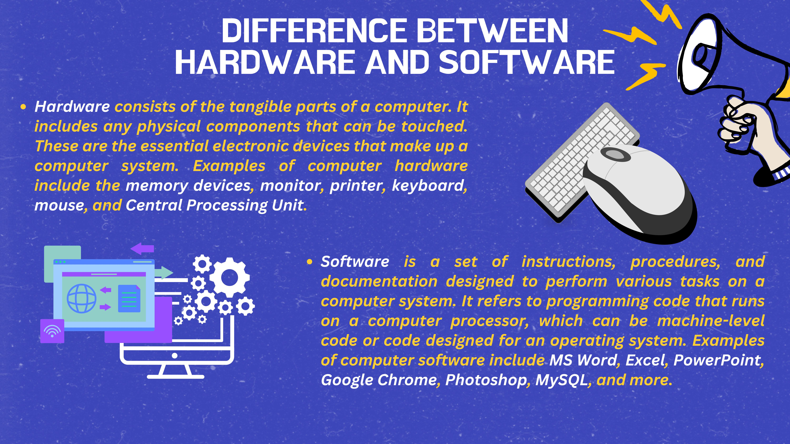
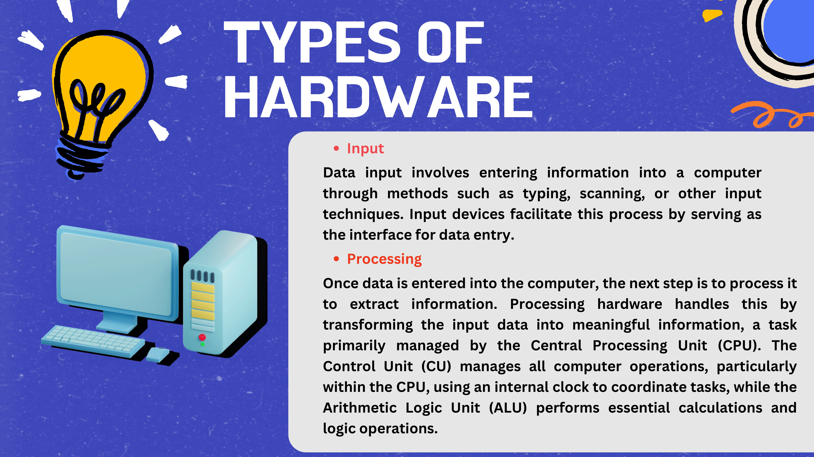
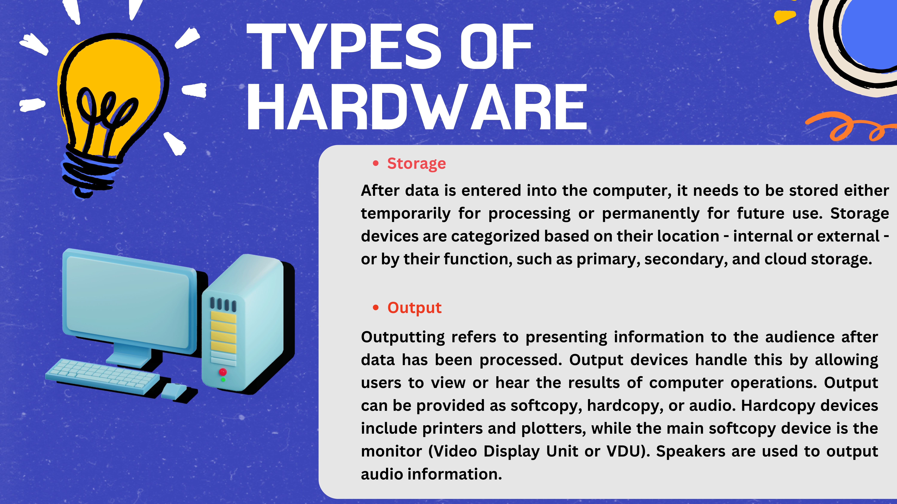
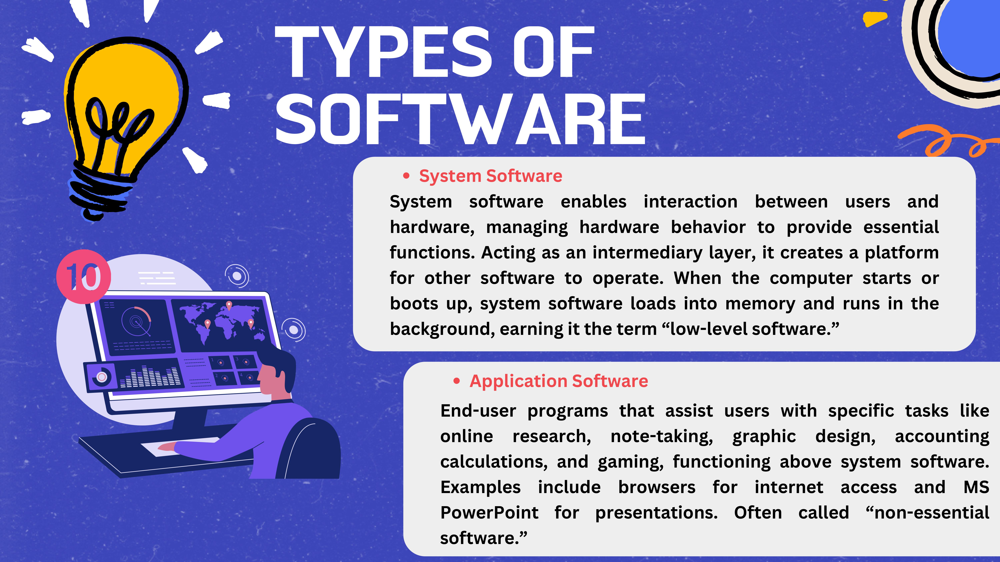
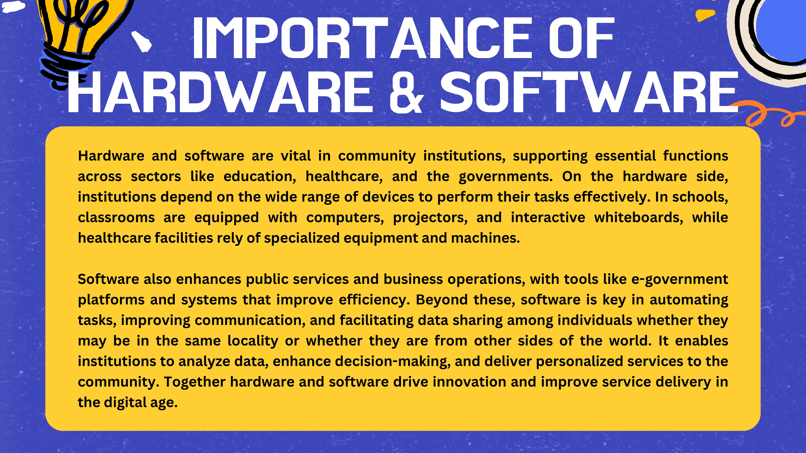
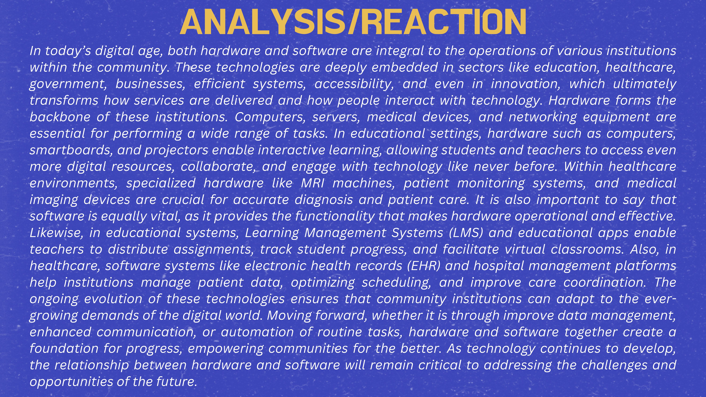
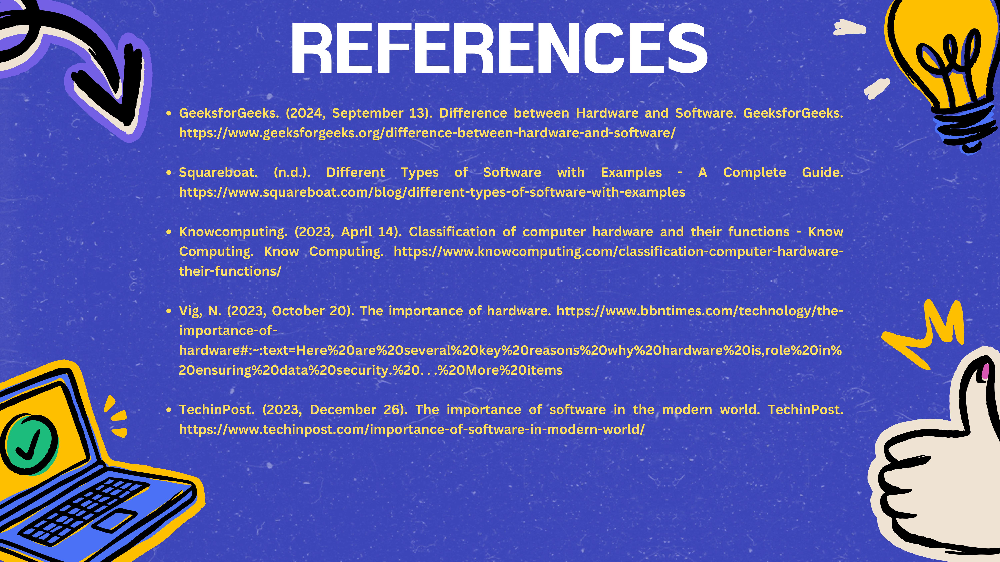
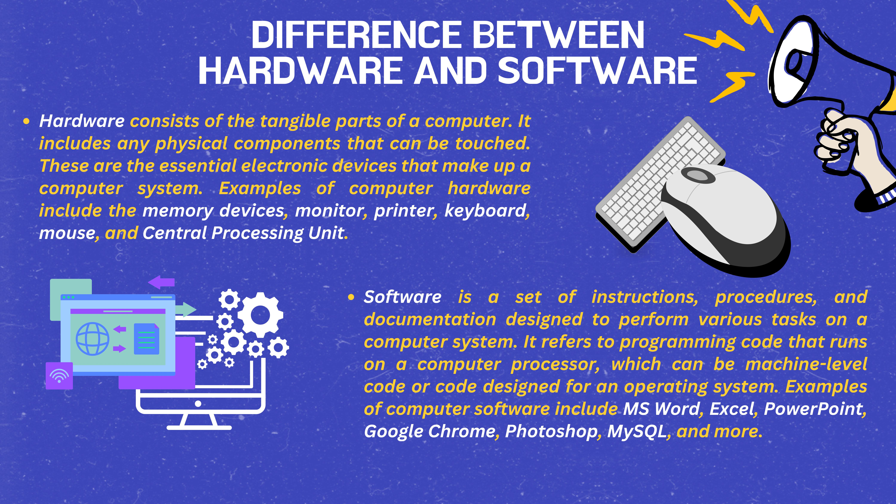
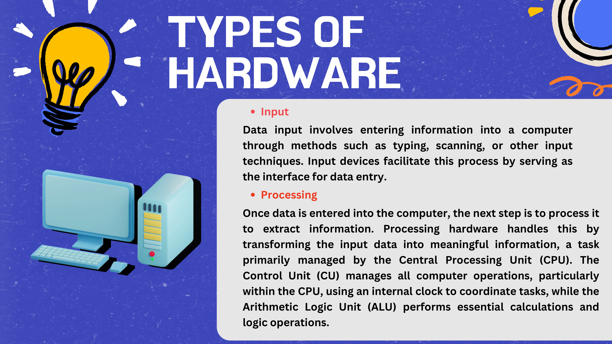
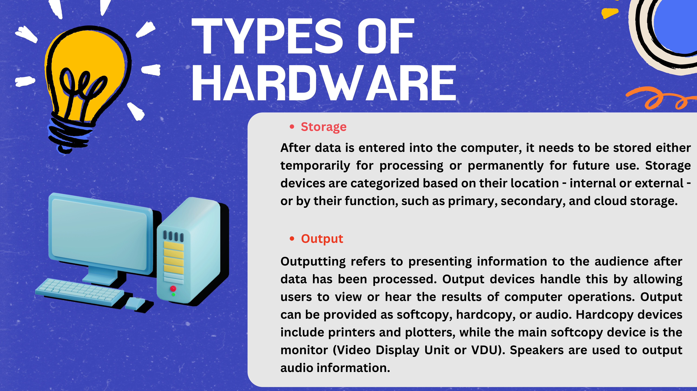
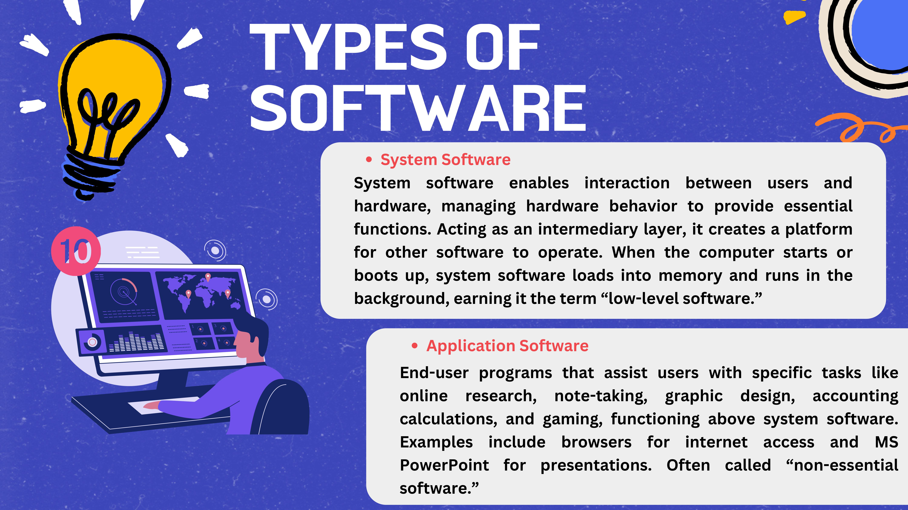
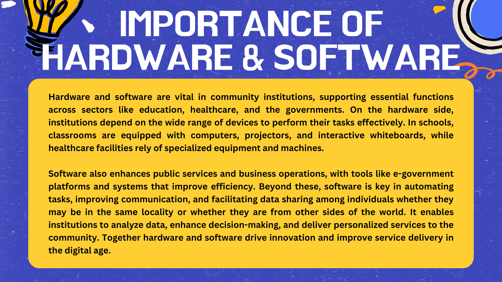
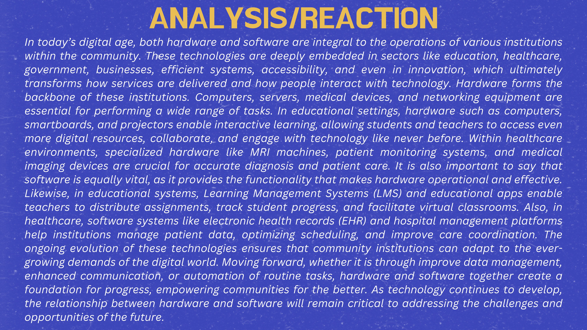
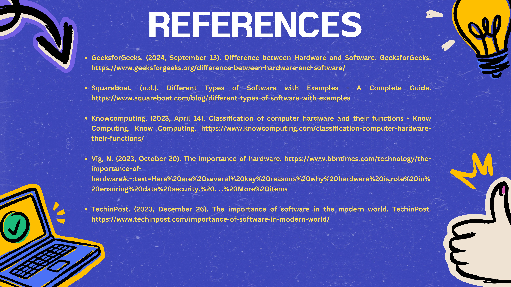